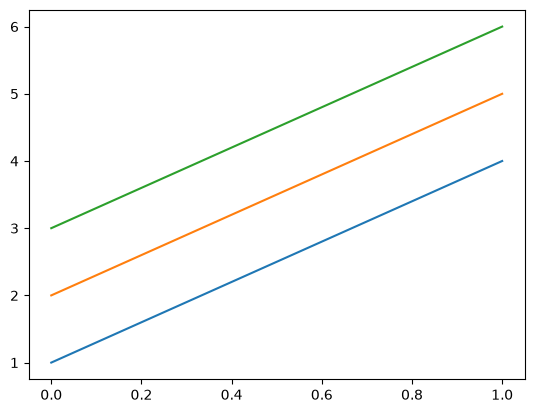

How to convert to/from NumPy#
As a generalization of NumPy, any NumPy array can be converted to an Awkward Array, but not vice-versa.
import awkward as ak
import numpy as np
From NumPy to Awkward#
The function for NumPy → Awkward conversion is ak.from_numpy().
np_array = np.array([1.1, 2.2, 3.3, 4.4, 5.5, 6.6, 7.7, 8.8, 9.9])
np_array
array([1.1, 2.2, 3.3, 4.4, 5.5, 6.6, 7.7, 8.8, 9.9])
ak_array = ak.from_numpy(np_array)
ak_array
[1.1, 2.2, 3.3, 4.4, 5.5, 6.6, 7.7, 8.8, 9.9] ----- backend: cpu nbytes: 72 B type: 9 * float64
However, NumPy arrays are also recognized by the ak.Array constructor, so you can use that unless your goal is to explicitly draw the reader’s attention to the fact that the input is a NumPy array.
ak_array = ak.Array(np_array)
ak_array
[1.1, 2.2, 3.3, 4.4, 5.5, 6.6, 7.7, 8.8, 9.9] ----- backend: cpu nbytes: 72 B type: 9 * float64
Fixed-size vs variable-length dimensions#
If the NumPy array is multidimensional, the Awkward Array will be as well.
np_array = np.array([[100, 200], [101, 201], [103, 203]])
np_array
array([[100, 200],
[101, 201],
[103, 203]])
ak_array = ak.Array(np_array)
ak_array
[[100, 200], [101, 201], [103, 203]] ------------ backend: cpu nbytes: 48 B type: 3 * 2 * int64
It’s important to notice that the type is 3 * 2 * int64, not 3 * var * int64. The second dimension has a fixed size—it is guaranteed to have exactly two items—just like a NumPy array. This differs from an Awkward Array constructed from Python lists:
ak.Array([[100, 200], [101, 201], [103, 203]])
[[100, 200], [101, 201], [103, 203]] ------------ backend: cpu nbytes: 80 B type: 3 * var * int64
or JSON:
ak.Array("[[100, 200], [101, 201], [103, 203]]")
[[100, 200], [101, 201], [103, 203]] ------------ backend: cpu nbytes: 80 B type: 3 * var * int64
because Python and JSON lists have arbitrary lengths, at least in principle, if not in a particular instance. Some behaviors depend on this fact (such as broadcasting rules).
From Awkward to NumPy#
The function for Awkward → NumPy conversion is ak.to_numpy().
np_array = np.array([1.1, 2.2, 3.3, 4.4, 5.5, 6.6, 7.7, 8.8, 9.9])
ak_array = ak.Array(np_array)
ak_array
[1.1, 2.2, 3.3, 4.4, 5.5, 6.6, 7.7, 8.8, 9.9] ----- backend: cpu nbytes: 72 B type: 9 * float64
ak.to_numpy(ak_array)
array([1.1, 2.2, 3.3, 4.4, 5.5, 6.6, 7.7, 8.8, 9.9])
Awkward Arrays that happen to have regular structure can be converted to NumPy, even if their type is formally “variable length lists” (var):
ak_array = ak.Array([[1, 2, 3], [4, 5, 6]])
ak_array
[[1, 2, 3], [4, 5, 6]] ----------- backend: cpu nbytes: 72 B type: 2 * var * int64
ak.to_numpy(ak_array)
array([[1, 2, 3],
[4, 5, 6]])
But if the lengths of nested lists do vary, attempts to convert to NumPy fail:
ak_array = ak.Array([[1, 2, 3], [], [4, 5]])
ak_array
[[1, 2, 3], [], [4, 5]] ----------- backend: cpu nbytes: 72 B type: 3 * var * int64
ak.to_numpy(ak_array)
---------------------------------------------------------------------------
ValueError Traceback (most recent call last)
Cell In[14], line 1
----> 1 ak.to_numpy(ak_array)
File ~/micromamba/envs/awkward-docs/lib/python3.11/site-packages/awkward/_dispatch.py:40, in named_high_level_function.<locals>.dispatch(*args, **kwargs)
37 @wraps(func)
38 def dispatch(*args, **kwargs):
39 # NOTE: this decorator assumes that the operation is exposed under `ak.`
---> 40 with OperationErrorContext(name, args, kwargs):
41 gen_or_result = func(*args, **kwargs)
42 if isgenerator(gen_or_result):
File ~/micromamba/envs/awkward-docs/lib/python3.11/site-packages/awkward/_errors.py:79, in ErrorContext.__exit__(self, exception_type, exception_value, traceback)
77 self._slate.__dict__.clear()
78 # Handle caught exception
---> 79 raise self.decorate_exception(exception_type, exception_value)
80 else:
81 # Step out of the way so that another ErrorContext can become primary.
82 if self.primary() is self:
File ~/micromamba/envs/awkward-docs/lib/python3.11/site-packages/awkward/_dispatch.py:66, in named_high_level_function.<locals>.dispatch(*args, **kwargs)
64 # Failed to find a custom overload, so resume the original function
65 try:
---> 66 next(gen_or_result)
67 except StopIteration as err:
68 return err.value
File ~/micromamba/envs/awkward-docs/lib/python3.11/site-packages/awkward/operations/ak_to_numpy.py:48, in to_numpy(array, allow_missing)
45 yield (array,)
47 # Implementation
---> 48 return _impl(array, allow_missing)
File ~/micromamba/envs/awkward-docs/lib/python3.11/site-packages/awkward/operations/ak_to_numpy.py:60, in _impl(array, allow_missing)
57 backend = NumpyBackend.instance()
58 numpy_layout = layout.to_backend(backend)
---> 60 return numpy_layout.to_backend_array(allow_missing=allow_missing)
File ~/micromamba/envs/awkward-docs/lib/python3.11/site-packages/awkward/contents/content.py:1131, in Content.to_backend_array(self, allow_missing, backend)
1129 else:
1130 backend = regularize_backend(backend)
-> 1131 return self._to_backend_array(allow_missing, backend)
File ~/micromamba/envs/awkward-docs/lib/python3.11/site-packages/awkward/contents/listoffsetarray.py:1900, in ListOffsetArray._to_backend_array(self, allow_missing, backend)
1898 return buffer.view(np.dtype(("S", max_count)))
1899 else:
-> 1900 return self.to_RegularArray()._to_backend_array(allow_missing, backend)
File ~/micromamba/envs/awkward-docs/lib/python3.11/site-packages/awkward/contents/listoffsetarray.py:296, in ListOffsetArray.to_RegularArray(self)
291 _size = Index64.empty(1, self._backend.nplike)
292 assert (
293 _size.nplike is self._backend.nplike
294 and self._offsets.nplike is self._backend.nplike
295 )
--> 296 self._backend.maybe_kernel_error(
297 self._backend[
298 "awkward_ListOffsetArray_toRegularArray",
299 _size.dtype.type,
300 self._offsets.dtype.type,
301 ](
302 _size.data,
303 self._offsets.data,
304 self._offsets.length,
305 )
306 )
307 size = self._backend.nplike.index_as_shape_item(_size[0])
308 length = self._offsets.length - 1
File ~/micromamba/envs/awkward-docs/lib/python3.11/site-packages/awkward/_backends/backend.py:62, in Backend.maybe_kernel_error(self, error)
60 return
61 else:
---> 62 raise ValueError(self.format_kernel_error(error))
ValueError: cannot convert to RegularArray because subarray lengths are not regular (in compiled code: https://github.com/scikit-hep/awkward/blob/awkward-cpp-56/awkward-cpp/src/cpu-kernels/awkward_ListOffsetArray_toRegularArray.cpp#L22)
This error occurred while calling
ak.to_numpy(
<Array [[1, 2, 3], [], [4, 5]] type='3 * var * int64'>
)
One might argue that such arrays should become NumPy arrays with dtype="O". However, this is usually undesirable because these “NumPy object arrays” are just arrays of pointers to Python objects, and all the performance issues of dealing with Python objects apply.
If you do want this, use ak.to_list() with the np.ndarray constructor.
np.array(ak.to_list(ak_array), dtype="O")
array([list([1, 2, 3]), list([]), list([4, 5])], dtype=object)
Implicit Awkward to NumPy conversion#
Awkward Arrays satisfy NumPy’s __array__ protocol, so simply passing an Awkward Array to the np.ndarray constructor calls ak.to_numpy().
ak_array = ak.Array([[1, 2, 3], [4, 5, 6]])
ak_array
[[1, 2, 3], [4, 5, 6]] ----------- backend: cpu nbytes: 72 B type: 2 * var * int64
np.array(ak_array)
array([[1, 2, 3],
[4, 5, 6]])
Libraries that expect NumPy arrays as input, such as Matplotlib, use this.
import matplotlib.pyplot as plt
plt.plot(ak_array);

Implicit conversion to NumPy inherits the same restrictions as ak.to_numpy(), namely that variable-length lists cannot be converted to NumPy.
ak_array = ak.Array([[1, 2, 3], [], [4, 5]])
ak_array
[[1, 2, 3], [], [4, 5]] ----------- backend: cpu nbytes: 72 B type: 3 * var * int64
np.array(ak_array)
---------------------------------------------------------------------------
ValueError Traceback (most recent call last)
Cell In[20], line 1
----> 1 np.array(ak_array)
File ~/micromamba/envs/awkward-docs/lib/python3.11/site-packages/awkward/highlevel.py:1563, in Array.__array__(self, dtype, copy)
1534 def __array__(self, dtype=None, copy=None):
1535 """
1536 Intercepts attempts to convert this Array into a NumPy array and
1537 either performs a conversion if possible or raises an error.
(...) 1561 cannot be sliced as dimensions.
1562 """
-> 1563 with ak._errors.OperationErrorContext(
1564 "numpy.asarray", (self,), {"dtype": dtype, "copy": copy}
1565 ):
1566 from awkward._connect.numpy import convert_to_array
1568 return convert_to_array(self._layout, dtype=dtype, copy=copy)
File ~/micromamba/envs/awkward-docs/lib/python3.11/site-packages/awkward/_errors.py:79, in ErrorContext.__exit__(self, exception_type, exception_value, traceback)
77 self._slate.__dict__.clear()
78 # Handle caught exception
---> 79 raise self.decorate_exception(exception_type, exception_value)
80 else:
81 # Step out of the way so that another ErrorContext can become primary.
82 if self.primary() is self:
File ~/micromamba/envs/awkward-docs/lib/python3.11/site-packages/awkward/highlevel.py:1568, in Array.__array__(self, dtype, copy)
1563 with ak._errors.OperationErrorContext(
1564 "numpy.asarray", (self,), {"dtype": dtype, "copy": copy}
1565 ):
1566 from awkward._connect.numpy import convert_to_array
-> 1568 return convert_to_array(self._layout, dtype=dtype, copy=copy)
File ~/micromamba/envs/awkward-docs/lib/python3.11/site-packages/awkward/_connect/numpy.py:526, in convert_to_array(layout, dtype, copy)
525 def convert_to_array(layout, dtype=None, copy=None):
--> 526 out = ak.operations.to_numpy(layout, allow_missing=False)
527 if copy:
528 return numpy.array(out, dtype=dtype, copy=True)
File ~/micromamba/envs/awkward-docs/lib/python3.11/site-packages/awkward/_dispatch.py:66, in named_high_level_function.<locals>.dispatch(*args, **kwargs)
64 # Failed to find a custom overload, so resume the original function
65 try:
---> 66 next(gen_or_result)
67 except StopIteration as err:
68 return err.value
File ~/micromamba/envs/awkward-docs/lib/python3.11/site-packages/awkward/operations/ak_to_numpy.py:48, in to_numpy(array, allow_missing)
45 yield (array,)
47 # Implementation
---> 48 return _impl(array, allow_missing)
File ~/micromamba/envs/awkward-docs/lib/python3.11/site-packages/awkward/operations/ak_to_numpy.py:60, in _impl(array, allow_missing)
57 backend = NumpyBackend.instance()
58 numpy_layout = layout.to_backend(backend)
---> 60 return numpy_layout.to_backend_array(allow_missing=allow_missing)
File ~/micromamba/envs/awkward-docs/lib/python3.11/site-packages/awkward/contents/content.py:1131, in Content.to_backend_array(self, allow_missing, backend)
1129 else:
1130 backend = regularize_backend(backend)
-> 1131 return self._to_backend_array(allow_missing, backend)
File ~/micromamba/envs/awkward-docs/lib/python3.11/site-packages/awkward/contents/listoffsetarray.py:1900, in ListOffsetArray._to_backend_array(self, allow_missing, backend)
1898 return buffer.view(np.dtype(("S", max_count)))
1899 else:
-> 1900 return self.to_RegularArray()._to_backend_array(allow_missing, backend)
File ~/micromamba/envs/awkward-docs/lib/python3.11/site-packages/awkward/contents/listoffsetarray.py:296, in ListOffsetArray.to_RegularArray(self)
291 _size = Index64.empty(1, self._backend.nplike)
292 assert (
293 _size.nplike is self._backend.nplike
294 and self._offsets.nplike is self._backend.nplike
295 )
--> 296 self._backend.maybe_kernel_error(
297 self._backend[
298 "awkward_ListOffsetArray_toRegularArray",
299 _size.dtype.type,
300 self._offsets.dtype.type,
301 ](
302 _size.data,
303 self._offsets.data,
304 self._offsets.length,
305 )
306 )
307 size = self._backend.nplike.index_as_shape_item(_size[0])
308 length = self._offsets.length - 1
File ~/micromamba/envs/awkward-docs/lib/python3.11/site-packages/awkward/_backends/backend.py:62, in Backend.maybe_kernel_error(self, error)
60 return
61 else:
---> 62 raise ValueError(self.format_kernel_error(error))
ValueError: cannot convert to RegularArray because subarray lengths are not regular (in compiled code: https://github.com/scikit-hep/awkward/blob/awkward-cpp-56/awkward-cpp/src/cpu-kernels/awkward_ListOffsetArray_toRegularArray.cpp#L22)
This error occurred while calling
numpy.asarray(
<Array [[1, 2, 3], [], [4, 5]] type='3 * var * int64'>
dtype = None
copy = True
)
NumPy’s structured arrays#
NumPy’s structured arrays correspond to Awkward’s “record type.”
np_array = np.array(
[(1, 1.1), (2, 2.2), (3, 3.3), (4, 4.4), (5, 5.5)], dtype=[("x", int), ("y", float)]
)
np_array
array([(1, 1.1), (2, 2.2), (3, 3.3), (4, 4.4), (5, 5.5)],
dtype=[('x', '<i8'), ('y', '<f8')])
ak_array = ak.from_numpy(np_array)
ak_array
[{x: 1, y: 1.1},
{x: 2, y: 2.2},
{x: 3, y: 3.3},
{x: 4, y: 4.4},
{x: 5, y: 5.5}]
----------------
backend: cpu
nbytes: 80 B
type: 5 * {
x: int64,
y: float64
}ak.to_numpy(ak_array)
array([(1, 1.1), (2, 2.2), (3, 3.3), (4, 4.4), (5, 5.5)],
dtype=[('x', '<i8'), ('y', '<f8')])
Awkward Arrays with record type can be sliced by field name like NumPy structured arrays:
ak_array["x"]
[1, 2, 3, 4, 5] --- backend: cpu nbytes: 40 B type: 5 * int64
np_array["x"]
array([1, 2, 3, 4, 5])
But Awkward Arrays can be sliced by field name and index within the same square brackets, whereas NumPy requires two sets of square brackets.
ak_array["x", 2]
np.int64(3)
np_array["x", 2]
---------------------------------------------------------------------------
IndexError Traceback (most recent call last)
Cell In[27], line 1
----> 1 np_array["x", 2]
IndexError: only integers, slices (`:`), ellipsis (`...`), numpy.newaxis (`None`) and integer or boolean arrays are valid indices
np_array["x"][2]
np.int64(3)
They have the same commutivity, however. In this example, slicing "x" and then 2 returns the same result as 2 and then "x".
ak_array[2, "x"]
np.int64(3)
np_array[2]["x"]
np.int64(3)
NumPy’s masked arrays#
NumPy’s masked arrays correspond to Awkward’s “option type.”
np_array = np.ma.MaskedArray(
[[1, 2, 3], [4, 5, 6]], mask=[[False, True, False], [True, True, False]]
)
np_array
masked_array(
data=[[1, --, 3],
[--, --, 6]],
mask=[[False, True, False],
[ True, True, False]],
fill_value=999999)
np_array.tolist()
[[1, None, 3], [None, None, 6]]
ak_array = ak.from_numpy(np_array)
ak_array
[[1, None, 3], [None, None, 6]] ----------------- backend: cpu nbytes: 54 B type: 2 * 3 * ?int64
The ? before int64 (expands to option[...] for more complex contents) refers to “option type,” meaning that the values can be missing (“None” in Python).
It is possible for a dataset to have no missing data, yet still have option type, just as it’s possible to have a NumPy masked array with no mask.
ak.from_numpy(np.ma.MaskedArray([[1, 2, 3], [4, 5, 6]], mask=False))
[[1, 2, 3], [4, 5, 6]] ----------- backend: cpu nbytes: 54 B type: 2 * 3 * ?int64
Awkward Arrays with option type are converted to NumPy masked arrays.
ak.to_numpy(ak_array)
masked_array(
data=[[1, --, 3],
[--, --, 6]],
mask=[[False, True, False],
[ True, True, False]],
fill_value=999999)
ak.to_numpy(ak_array).tolist()
[[1, None, 3], [None, None, 6]]
Note, however, that the structure of an Awkward Array’s option type is not always preserved when converting to NumPy masked arrays. Masked arrays can only have missing numbers, not missing lists, so missing lists are expanded into lists of missing numbers.
For example, an array of type var * ?int64 can be converted into an identical NumPy structure:
ak_array1 = ak.Array([[1, None, 3], [None, None, 6]])
ak_array1
[[1, None, 3], [None, None, 6]] ----------------- backend: cpu nbytes: 96 B type: 2 * var * ?int64
ak.to_numpy(ak_array1).tolist()
[[1, None, 3], [None, None, 6]]
But an array of type option[var * int64] must have its missing lists expanded into lists of missing numbers.
ak_array2 = ak.Array([[1, 2, 3], None, [4, 5, 6]])
ak_array2
[[1, 2, 3], None, [4, 5, 6]] ----------- backend: cpu nbytes: 96 B type: 3 * option[var * int64]
ak.to_numpy(ak_array2).tolist()
[[1, 2, 3], [None, None, None], [4, 5, 6]]
Finally, it is possible to prevent the ak.to_numpy() function from creating NumPy masked arrays by passing allow_missing=False.
ak.to_numpy(ak_array, allow_missing=False)
---------------------------------------------------------------------------
ValueError Traceback (most recent call last)
Cell In[41], line 1
----> 1 ak.to_numpy(ak_array, allow_missing=False)
File ~/micromamba/envs/awkward-docs/lib/python3.11/site-packages/awkward/_dispatch.py:40, in named_high_level_function.<locals>.dispatch(*args, **kwargs)
37 @wraps(func)
38 def dispatch(*args, **kwargs):
39 # NOTE: this decorator assumes that the operation is exposed under `ak.`
---> 40 with OperationErrorContext(name, args, kwargs):
41 gen_or_result = func(*args, **kwargs)
42 if isgenerator(gen_or_result):
File ~/micromamba/envs/awkward-docs/lib/python3.11/site-packages/awkward/_errors.py:79, in ErrorContext.__exit__(self, exception_type, exception_value, traceback)
77 self._slate.__dict__.clear()
78 # Handle caught exception
---> 79 raise self.decorate_exception(exception_type, exception_value)
80 else:
81 # Step out of the way so that another ErrorContext can become primary.
82 if self.primary() is self:
File ~/micromamba/envs/awkward-docs/lib/python3.11/site-packages/awkward/_dispatch.py:66, in named_high_level_function.<locals>.dispatch(*args, **kwargs)
64 # Failed to find a custom overload, so resume the original function
65 try:
---> 66 next(gen_or_result)
67 except StopIteration as err:
68 return err.value
File ~/micromamba/envs/awkward-docs/lib/python3.11/site-packages/awkward/operations/ak_to_numpy.py:48, in to_numpy(array, allow_missing)
45 yield (array,)
47 # Implementation
---> 48 return _impl(array, allow_missing)
File ~/micromamba/envs/awkward-docs/lib/python3.11/site-packages/awkward/operations/ak_to_numpy.py:60, in _impl(array, allow_missing)
57 backend = NumpyBackend.instance()
58 numpy_layout = layout.to_backend(backend)
---> 60 return numpy_layout.to_backend_array(allow_missing=allow_missing)
File ~/micromamba/envs/awkward-docs/lib/python3.11/site-packages/awkward/contents/content.py:1131, in Content.to_backend_array(self, allow_missing, backend)
1129 else:
1130 backend = regularize_backend(backend)
-> 1131 return self._to_backend_array(allow_missing, backend)
File ~/micromamba/envs/awkward-docs/lib/python3.11/site-packages/awkward/contents/regulararray.py:1265, in RegularArray._to_backend_array(self, allow_missing, backend)
1263 return self._content.data.view(np.dtype(("S", self._size)))
1264 else:
-> 1265 out = self._content._to_backend_array(allow_missing, backend)
1266 shape = (self.length, self._size, *out.shape[1:])
1268 # ShapeItem is a defined type, but some nplikes don't map onto the entire space; e.g.
1269 # NumPy never has `None` shape items. We require that if a shape-item is used between nplikes
1270 # they both be the same "known-shape-ness".
File ~/micromamba/envs/awkward-docs/lib/python3.11/site-packages/awkward/contents/bytemaskedarray.py:1088, in ByteMaskedArray._to_backend_array(self, allow_missing, backend)
1087 def _to_backend_array(self, allow_missing, backend):
-> 1088 return self.to_IndexedOptionArray64()._to_backend_array(allow_missing, backend)
File ~/micromamba/envs/awkward-docs/lib/python3.11/site-packages/awkward/contents/indexedoptionarray.py:1617, in IndexedOptionArray._to_backend_array(self, allow_missing, backend)
1615 return nplike.ma.MaskedArray(data, mask)
1616 else:
-> 1617 raise ValueError(
1618 "Content.to_nplike cannot convert 'None' values to "
1619 "np.ma.MaskedArray unless the "
1620 "'allow_missing' parameter is set to True"
1621 )
1622 else:
1623 if allow_missing:
ValueError: Content.to_nplike cannot convert 'None' values to np.ma.MaskedArray unless the 'allow_missing' parameter is set to True
This error occurred while calling
ak.to_numpy(
<Array [[1, None, 3], [None, None, 6]] type='2 * 3 * ?int64'>
allow_missing = False
)
You might want to do this to be sure that the output of ak.to_numpy() has type np.ndarray (or die trying).
NumpyArray shapes vs RegularArrays#
Note
Advanced topic: it is not necessary to understand the internal representation in order to use Awkward Arrays in data analysis.
One reason you might want to use ak.from_numpy() directly is to control how it is internally represented.
Inside of an ak.Array, data structures are represented by “layout nodes” such as ak.contents.NumpyArray and ak.contents.RegularArray.
np_array = np.array([[[1, 2], [3, 4], [5, 6]], [[7, 8], [9, 10], [11, 12]]], dtype="i1")
ak_array1 = ak.from_numpy(np_array)
ak_array1.layout
<NumpyArray dtype='int8' shape='(2, 3, 2)'>
[[[ 1 2]
[ 3 4]
...
[ 9 10]
[11 12]]]
</NumpyArray>
In the above, the shape is represented as part of the ak.contents.NumpyArray node, but it could also have been represented in ak.contents.RegularArray nodes.
ak_array2 = ak.from_numpy(np_array, regulararray=True)
ak_array2.layout
<RegularArray size='3' len='2'>
<content><RegularArray size='2' len='6'>
<content><NumpyArray dtype='int8' len='12'>
[ 1 2 3 4 5 6 7 8 9 10 11 12]
</NumpyArray></content>
</RegularArray></content>
</RegularArray>
In the above, the internal ak.contents.NumpyArray is one-dimensional and the shape is described by nesting it within two ak.contents.RegularArray nodes.
This distinction is technical: ak_array1 and ak_array2 have the same ak.type() and behave identically (including broadcasting rules).
ak.type(ak_array1)
ArrayType(RegularType(RegularType(NumpyType('int8'), 2), 3), 2, None)
ak.type(ak_array2)
ArrayType(RegularType(RegularType(NumpyType('int8'), 2), 3), 2, None)
ak_array1 == ak_array2
[[[True, True], [True, True], [True, True]], [[True, True], [True, True], [True, True]]] -------------------------------------------- backend: cpu nbytes: 12 B type: 2 * 3 * 2 * bool
ak.all(ak_array1 == ak_array2)
np.True_
Mutability of Awkward Arrays from NumPy#
Note
Advanced topic: unless you’re willing to investigate subtleties of when a NumPy array is viewed and when it is copied, do not modify the NumPy arrays that Awkward Arrays are built from (or build Awkward Arrays from deliberate copies of the NumPy arrays).
Awkward Arrays are not supposed to be changed in place (“mutated”), and all of the functions in the Awkward Array library return new values, rather than changing the old. However, it is possible to create an Awkward Array from a NumPy array and modify the NumPy array in place, thus modifying the Awkward Array. Wherever possible, Awkward Arrays are views of the NumPy data, not copies.
np_array = np.array([[1, 2, 3], [4, 5, 6]])
np_array
array([[1, 2, 3],
[4, 5, 6]])
ak_array = ak.from_numpy(np_array)
ak_array
[[1, 2, 3], [4, 5, 6]] ----------- backend: cpu nbytes: 48 B type: 2 * 3 * int64
# Change the NumPy array in place.
np_array *= 100
np_array
array([[100, 200, 300],
[400, 500, 600]])
# The Awkward Array changes as well.
ak_array
[[100, 200, 300], [400, 500, 600]] ----------------- backend: cpu nbytes: 48 B type: 2 * 3 * int64
You might want to do this in some performance-critical applications. However, note that NumPy arrays sometimes have to be copied to make an Awkward Array.
For example, if a NumPy array is not C-contiguous and is internally represented as a ak.contents.RegularArray (see previous section), it must be copied.
# Slicing the inner dimension of this NumPy array makes it not C-contiguous.
np_array = np.array([[1, 2, 3], [4, 5, 6]])
np_array.flags["C_CONTIGUOUS"], np_array[:, :-1].flags["C_CONTIGUOUS"]
(True, False)
# Case 1: C-contiguous and not RegularArray (should view).
ak_array1 = ak.from_numpy(np_array)
ak_array1
[[1, 2, 3], [4, 5, 6]] ----------- backend: cpu nbytes: 48 B type: 2 * 3 * int64
# Case 2: C-contiguous and RegularArray (should view).
ak_array2 = ak.from_numpy(np_array, regulararray=True)
ak_array2
[[1, 2, 3], [4, 5, 6]] ----------- backend: cpu nbytes: 48 B type: 2 * 3 * int64
# Case 3: not C-contiguous and not RegularArray (should view).
ak_array3 = ak.from_numpy(np_array[:, :-1])
ak_array3
[[1, 2], [4, 5]] -------- backend: cpu nbytes: 32 B type: 2 * 2 * int64
# Case 4: not C-contiguous and RegularArray (has to copy).
ak_array4 = ak.from_numpy(np_array[:, :-1], regulararray=True)
ak_array4
[[1, 2], [4, 5]] -------- backend: cpu nbytes: 32 B type: 2 * 2 * int64
# Change the NumPy array in place.
np_array *= 100
np_array[:, :-1]
array([[100, 200],
[400, 500]])
# Case 1 changes as well because it is a view.
ak_array1
[[100, 200, 300], [400, 500, 600]] ----------------- backend: cpu nbytes: 48 B type: 2 * 3 * int64
# Case 2 changes as well because it is a view.
ak_array2
[[100, 200, 300], [400, 500, 600]] ----------------- backend: cpu nbytes: 48 B type: 2 * 3 * int64
# Case 3 changes as well because it is a view.
ak_array3
[[100, 200], [400, 500]] ------------ backend: cpu nbytes: 32 B type: 2 * 2 * int64
# Case 4 does not change because it is a copy.
ak_array4
[[1, 2], [4, 5]] -------- backend: cpu nbytes: 32 B type: 2 * 2 * int64
In general, it can be hard to determine if an Awkward Array is a view or a copy because some operations need to construct a ak.contents.RegularArray. Furthermore, the view-vs-copy behavior can change from one version of Awkward Array to the next. It is only safe to rely on view-vs-copy behavior of Awkward Arrays that were directly created from NumPy arrays, as in the four cases above, not in any derived arrays (i.e. arrays produced from slices of Awkward Arrays or computed using functions from the Awkward Array library).
Mutability of Awkward Arrays converted to NumPy#
Note
Advanced topic: unless you’re willing to investigate subtleties of when an Awkward array is viewed and when it is copied, do not modify the NumPy arrays that Awkward Arrays are converted into (or make deliberate copies of the resulting NumPy arrays).
The considerations described above also apply to NumPy arrays created from Awkward Arrays. If possible, they are views, rather than copies, but these semantics are not guaranteed.
ak_array = ak.Array([[1, 2, 3], [4, 5, 6]])
ak_array
[[1, 2, 3], [4, 5, 6]] ----------- backend: cpu nbytes: 72 B type: 2 * var * int64
np_array = ak.to_numpy(ak_array)
np_array
array([[1, 2, 3],
[4, 5, 6]])
# Change the NumPy array in place.
np_array *= 100
np_array
array([[100, 200, 300],
[400, 500, 600]])
# The Awkward Array that it came from is changed as well.
ak_array
[[100, 200, 300], [400, 500, 600]] ----------------- backend: cpu nbytes: 72 B type: 2 * var * int64
As a counter-example, a NumPy array constructed from an Awkward Array with missing data might not be a view. (It depends on the internal representation; the most common case of an ak.contents.IndexedOptionArray is not.)
ak_array1 = ak.Array([[1, None, 3], [None, None, 6]])
ak_array1
[[1, None, 3], [None, None, 6]] ----------------- backend: cpu nbytes: 96 B type: 2 * var * ?int64
np_array = ak.to_numpy(ak_array1)
np_array
masked_array(
data=[[1, --, 3],
[--, --, 6]],
mask=[[False, True, False],
[ True, True, False]],
fill_value=999999)
# Change the NumPy array in place.
np_array *= 100
np_array
masked_array(
data=[[100, --, 300],
[--, --, 600]],
mask=[[False, True, False],
[ True, True, False]],
fill_value=999999)
# The Awkward Array that it came from is not changed in this case.
ak_array1
[[1, None, 3], [None, None, 6]] ----------------- backend: cpu nbytes: 96 B type: 2 * var * ?int64